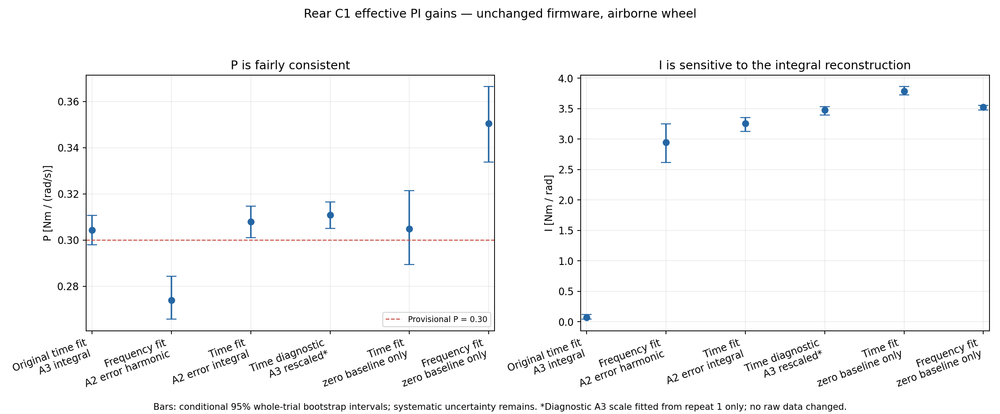
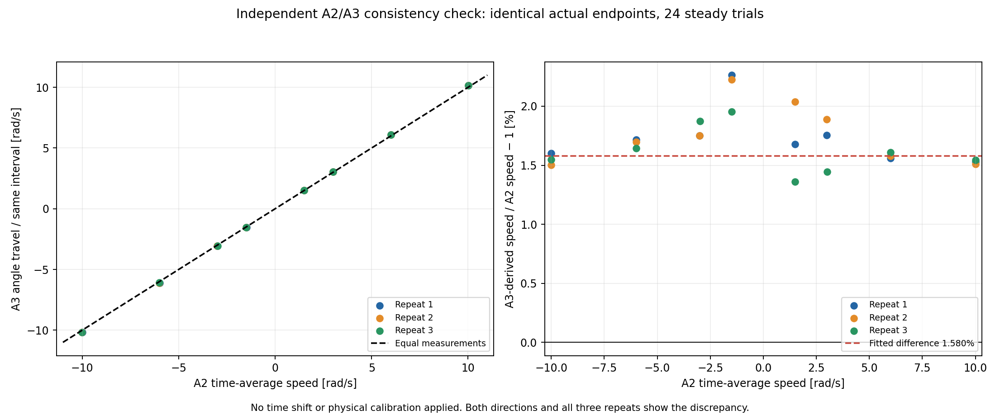
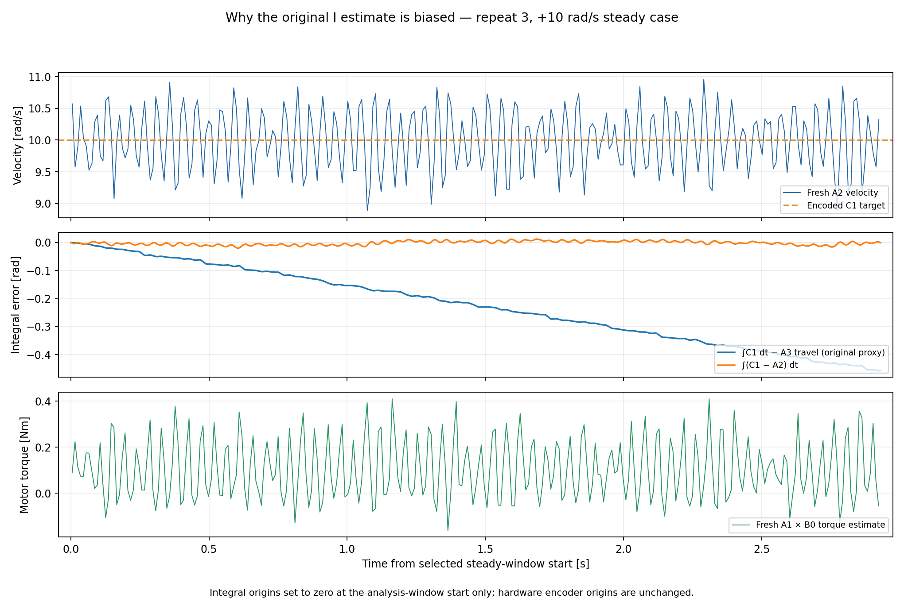
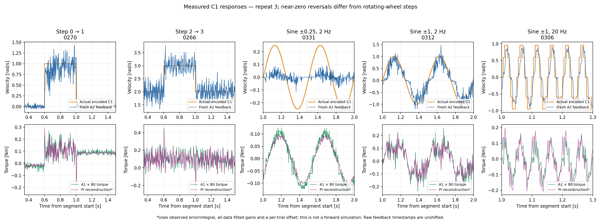
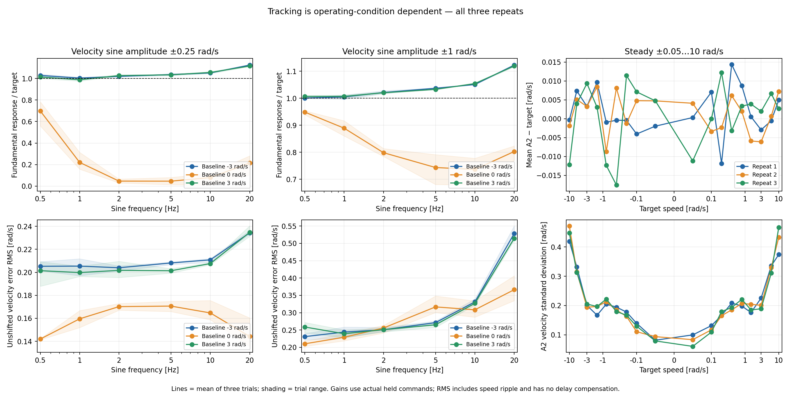

Rear C1 effective PI identification
Provisional velocity P ≈0.30 Nm/(rad/s); I ≈3.3 Nm/rad is a model starting point,
not calibrated firmware gain units.
A3 travel / integrated A2 speed ≈1.0158. Read the review before using the original automated I estimate.
Analysis report · Reviewed fits ·
Raw-packet audit · Review figures PDF ·
Tracking table · Gain table
P estimates agree approximately; I is strongly affected by the error integral.

SVG · PDF
A3 travel is about 1.58% higher than integrated A2 speed at steady motion.

SVG · PDF
A3-based accumulated error drifts despite near-zero average A2 tracking error.

SVG · PDF
Fresh velocity/current traces and their PI reconstruction; near-zero nonlinear behavior is visible.

SVG · PDF
Zero-crossing small sine tracking is much worse than tracking around ±3 rad/s.

SVG · PDF
Original automated figures
Preserved for reproducibility; their original A3-integral fit is biased here.
steady_conditions
frequency_response
timing_sensitivity
example_1
example_2
example_3
example_4
Original automated report · Original statistics · Original PDF